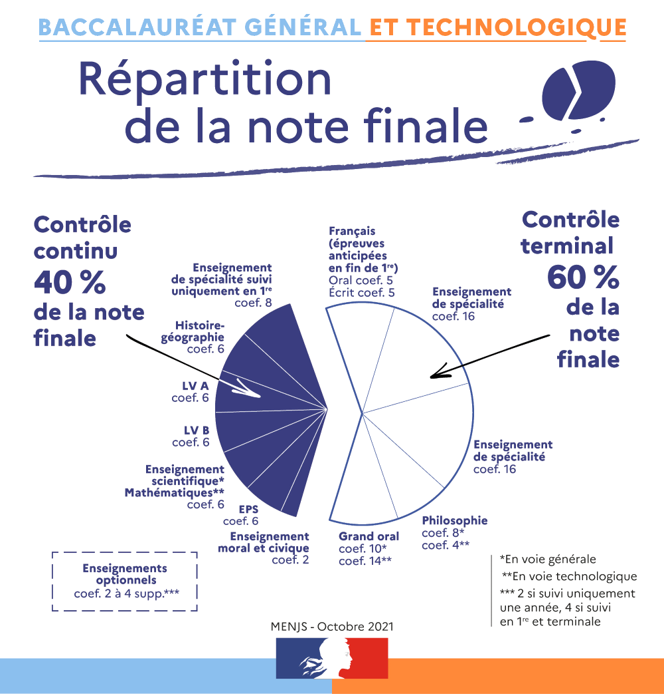
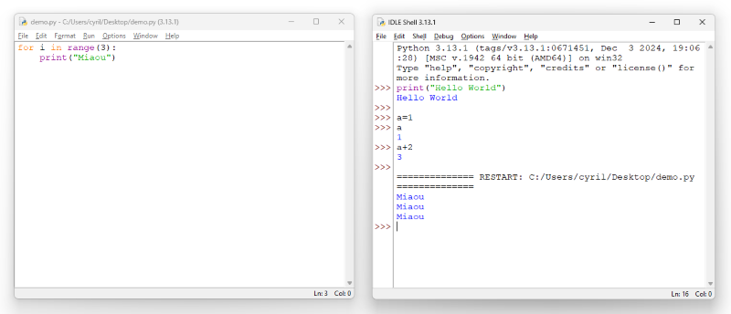
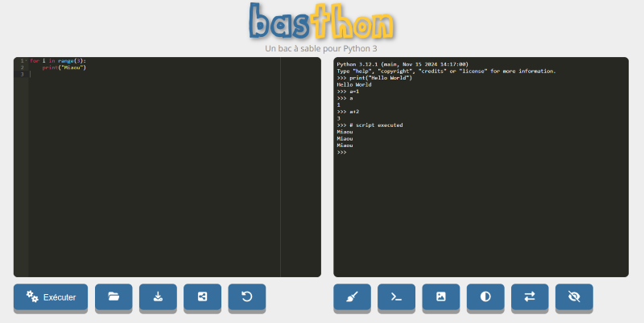
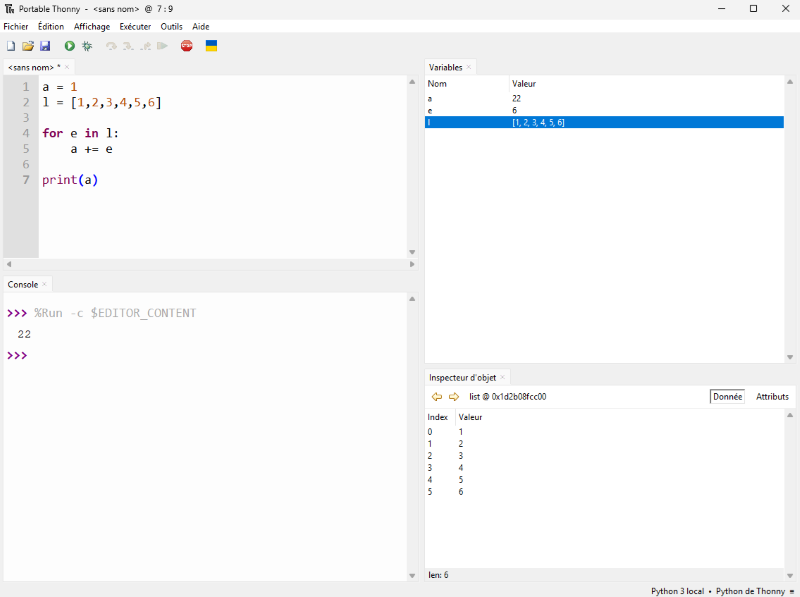
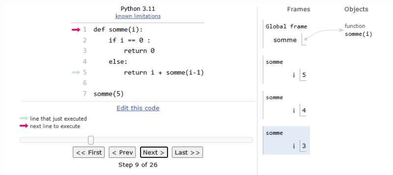
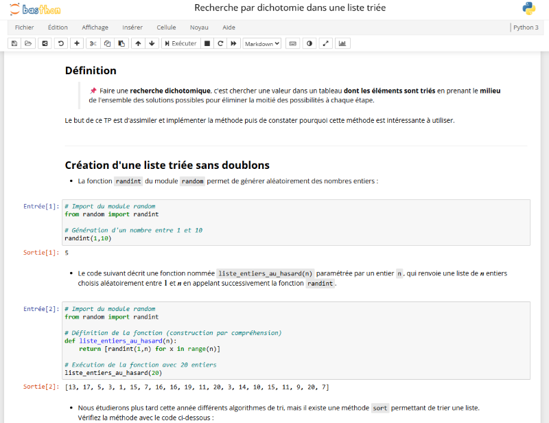
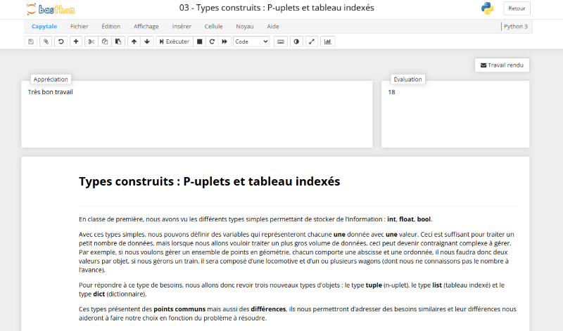
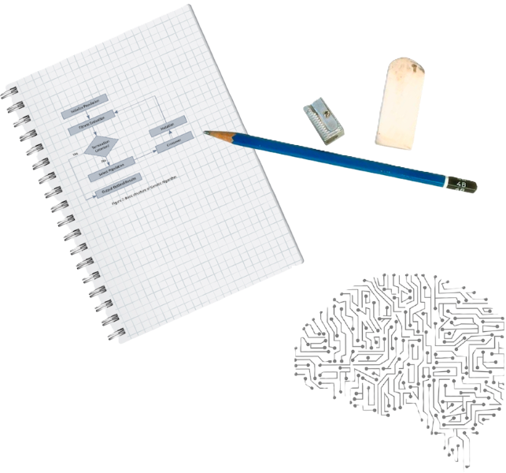

En classe de terminale
📖 Le programme Officiel
Programme de numérique et sciences informatiques de terminale générale
Bulletin officiel de l'éducation nationale spécial n°1 du 22 janvier 2019
Cet enseignement s’appuie sur quatre concepts fondamentaux :
- Les données, qui représentent sous une forme numérique des informations diverses : textes, images, sons, mesures physiques, sommes d’argent, etc.
- Les algorithmes, qui spécifient de façon abstraite et précise des traitements à effectuer sur les données à partir d’opérations élémentaires.
- Les langages, qui permettent de traduire ces algorithmes abstraits en programmes de façon à ce qu’ils soient exécutables par les machines.
- Les machines, et leurs systèmes d’exploitation, qui permettent d’exécuter des programmes, assurent le stockage des données. On y inclut les objets connectés et les réseaux.
En classe de terminale, le programme de NSI sera découpé en 5 chapitres :
- Structures de données (piles, files, arbres, graphes)
- Bases de données (modèle relationnel, SGBD, SQL)
- Architectures matérielles, systèmes d'exploitation et réseaux (composants, processus, routage et sécurité réseau)
- Langages et programmation (récursivité, mise au point, bugs, POO)
- Algorithmique avancée (parcours, diviser pour régner, recherche textuelle)
L'histoire de l'informatique sera traitée de manière transversale tout au long des cours de première et terminale.
🕦 La répartition en terminale
6 heures de cours répartis en 3 blocs de 2 heures
- Il n'y a pas de répartition standard de ces 6 heures entre les cours et les TPs, les cours contiendront des exercices de compréhension et peuvent s'étaler sur 1/2 séance (1h) ou plusieurs séances (2 x 2 heures) les TPs s'étaleront souvent sur une séance complète (2h).
- Afin de bien préparer le baccalauréat dont les 3/4 de la note sont obtenus à l'écrit, nous effectuerons donc des exercices sur feuille sans l'accès aux machines (souvent piochés dans les annales des années précédentes).
📝 Les évaluations
- Devoirs surveillés (QCM ou exercices à l'écrit)
- Exercices type bac
- Activités sur machine en classe
- Bacs blancs (écrit et pratique)
✅ Les besoins
- Une clé USB ou un drive pour sauvegarder vos cours, exercices et TP que vous aurez modifiés
- Des écouteurs avec une prise Jack 3.5mm mâle pour pouvoir écouter des vidéos parfois intégrées au cours (pas de bluetooth ou airpods)
- Connaître ses accès aux ordinateurs, à l'ENT et Pronote
⚠️ Les règles
- Etre à l’heure : une tolérance de 5mn, au delà le cours ne sera plus accessible
- Poser son téléphone dans la PhoneBox à son arrivée en classe
- Passer aux toilettes avant ou après le cours, pas de sortie pendant le cours
- Respecter ses camarades et le professeur
- Respecter le matériel qui est notre outil de travail
🎓 Le baccalauréat
Épreuve de l'enseignement de spécialité numérique et sciences informatiques de la classe de terminale de la voie générale à compter de la session 2026 de l'examen du baccalauréat
Bulletin officiel de l'éducation nationale n°31 du 21 août 2025
Épreuve écrite - Les 15, 16 et 17 juin 2027
sur 20 points - durée 3 h 30 - coeff 0.75
Programme d'examen des épreuves terminales des enseignements de spécialité
Bulletin officiel de l'éducation nationale n°36 du 30 septembre 2022
Depuis la session 2023, l'épreuve consiste en trois exercices qui doivent tous être traités.
Note : Les annales des sujets précédents (2020, 2021, 2022) comportent tous 5 exercices dont seulement 3 devaient être traités. Ce n'est plus le cas depuis la session 2023 où la totalité du sujet doit être traité
Épreuve pratique - Dates à définir début juin 2027
sur 20 points - durée 1 h - coeff 0.25
Partie pratique de l'épreuve de l’enseignement de spécialité numérique et sciences informatiques de la session 2026
Bulletin officiel de l'éducation nationale n°46 du 4 décembre 2025
La partie pratique consiste à programmer sur ordinateur une application informatique à partir d’un document fourni au candidat. Elle a pour objectif d’évaluer le niveau de maîtrise des compétences pratiques du candidat. Le candidat est évalué sur la base d'un dialogue avec un professeur-examinateur. Un examinateur évalue au maximum quatre élèves simultanément. L'examinateur ne peut pas évaluer un élève qu'il a eu en classe durant l'année en cours.
Note : Les situations d’évaluation sont regroupées dans une banque disponible sur le site : DELOS au plus tard au 24 mars de chaque session.
A noter
- Les deux épreuves n'auront pas lieu le même jour.
- Les notes de l'épreuve de terminale compteront pour le baccalauréat avec le coefficient 16 sur 60.
- La note sur 20 au baccalauréat en NSI est constituée de 15 points d'épreuve écrite et de 5 points d'épreuve pratique.

💻 Notre environnement de travail
Python et IDLE
Pour pouvoir utiliser un langage de programmation, en particulier Python, il faut un environnement de développement souvent appelé IDE Integrated Development Environment.
Lorsqu'on installe Python, l'IDE par défaut est IDLE. Nous utiliserons celui-ci dans un premier temps.
Celui-ci est très simple, il composé de deux éléments principaux :
- L'éditeur qui permet de créer, modifier et enregistrer des programmes Python au format
.py
- La console qui permet d'exécuter des instructions Python une à une et de suivre l'exécution des programmes

Python (et IDLE qui vient avec) peut être téléchargé à l'adresse https://www.python.org/downloads
Basthon en mode console
L'utilisation d'un IDE nécessite l'installation du logiciel sur son ordinateur.
Il existe cependant un outil en ligne appelé basthon (c'est l'acronyme de "bac à sable pour python") qui nous permettra de programmer en Python sans rien installer et quelque soit notre plateforme (PC, mac, Linux, tablette...)
A la manière de IDLE, il permet de lancer des commandes dans la console Python et de créer, enregistrer et importer des fichiers .py

L'accès au site se fait à l'adresse https://console.basthon.fr
Thonny
Thonny est un autre IDE disponible au lycée, nous l'utiliserons en cours d'année car il dispose de certaines fonctionnalités non disponibles dans IDLE comme par exemple l'exploration de variables et l'inspecteur d'objets.

Thonny peut être téléchargé à l'adresse https://thonny.org et il existe en version portable, c'est à dire exécutable à partir d'une clé USB sous n'importe quel ordinateur Windows.
Python Tutor
Python Tutor est un site web qui permet de visualiser l'exécution de code Python. Il nous sera très utile pour "décortiquer" du code pour le comprendre ou lors de la recherche de problèmes dans du code.

L'accès au site se fait à l'adresse https://pythontutor.com/visualize.html#mode=edit
Jupyter Notebook
Jupyter Notebook est un environnement de programmation interactif permettant de créer des document intitulés "notebooks". Il s'agit de documents se présentant sous la forme d'une succession de cellules qui peuvent contenir du code Python, du texte brut, des formules mathématiques, des graphiques ou encore du texte mis en forme grâce au langage markdown.
Les notebooks possèdent généralement l'extension .ipynb
Pour utiliser les notebooks Jupyter il faut généralement installer le logiciel sur son ordinateur.
Basthon en mode notebook
Basthon permet aussi d'ouvrir, créer, enregistrer et exécuter les fichiers Jupyter Notebook en ligne.
L'accès au site se fait à l'adresse https://notebook.basthon.fr

En cas de panne du site Basthon, Jupyter propose un éditeur en ligne de Notebooks à l'adresse https://jupyter.org/try-jupyter/lab le notebook peut être ouvert en utilisant le bouton "Upload files" pour charger votre fichier.
Capytale
Capytale est un outil qui permet l'utilisation des notebook sur le site Basthon mais avec une interface avec le lycée par l'ENT.
Autrement-dit, il me permettra de vous donner des TPs à faire en ligne, de récupérer votre travail et de vous rendre ceux-ci avec une note et appréciation.

L'accès aux notebooks vous sera donné par l'intermédiaire de liens que je vous fournirais.
France IOI
Fondée en 2004, l'association France-IOI crée des contenus et outils pour découvrir la pensée informatique et progresser rapidement en programmation et algorithmique.
Parmi ces outils on peut noter le concours Castor et le concours Algoréa.
L'accès au site se fait à l'adresse https://www.france-ioi.org
L'ancien site est également accessible et met à disposition un parcours pour progresser en Python, il est disponible à l'adresse https://www.france-ioi.org/algo/chapters.php
Mais aussi...

Un cahier ou une feuille de brouillon avec un crayon et de quoi raturer ou effacer sont également nécessaires pour "mettre à plat" ses idées avant de se jeter sur son clavier !